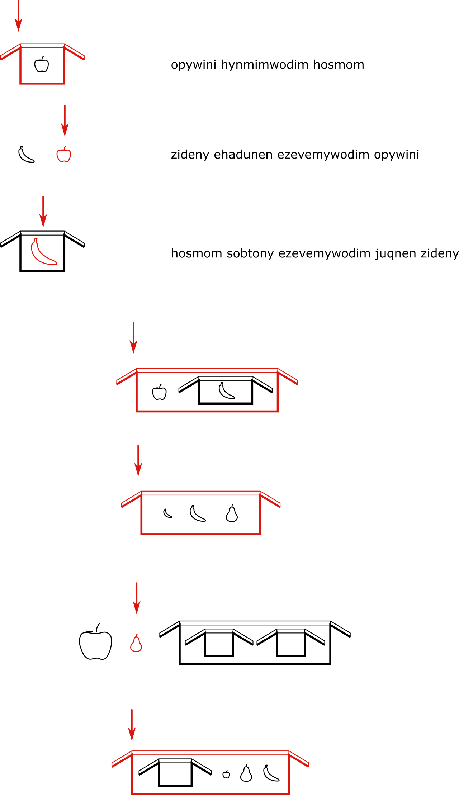

Solution: The Astrologers
Answer: WE'RE IN OPPOSITION
Written by Lennart Jansson
Answers used:PARABOLIC INDOORS PEACE SLOW DOWN LEATHER COATS STRONGER NORTHEASTER EXTRACTION
This puzzle, tasks solvers with looking at a few examples of descriptions of objects in solar systems, then using the rules learned from the examples to produce new phrases to describe the unlabeled objects below. The first insight needed is that each picture has an arrow pointing to one body — the associated phrases is therefore a description of that object (e.g. “the planet that is...”).
The puzzle tests solvers' recognition that puflantu is consistently head-final, meaning that the roles of phrases are indicated by the words occuring at their ends. Japanese is a good example of a real language with this property (Spanish is an example of the opposite — it is head-initial). Solvers are intended to figure this out themselves, perhaps with some help from the examples given by the artifacts they have collected up to this point. The puzzle is still solvable without this a-ha, though resolving the ambiguities in word ordering will lead solvers there eventually anyhow.
One possible way to make this insight is to notice that if the first phrase describes a planet, the second phrase describes a spaceship (relative to a planet), and the third phrase describes another planet, we would expect the word for planet to appear in all three sentences, but appear in the same position in the phrase in the first and third but not the second. This deduction tells us the language is head-final, “forovo” means planet (or at least, a smooth planet-shaped object), and “qacepo” means spaceship.
Head-final phrase structures means one can then deduce that “pamono” is likely the color red and “defisa” means spinning (clockwise). The last noun (for the asteroid-shaped object) would initially appear to be “zagtivo-li”, but one might notice the word bank at the top contains noun and noun-li pairs for each of the previously identified nouns, implying -li is some sort of grammatical particle rather than part of the base form of a noun. So “zagtivo” is a better candidate for asteroid. Solvers might guess at this point that -li is approximately "and", since it appears between two nouns being listed in order in the third phrase.
In the second example, we're then left with the unknown words utqunxe-fws and zulalam-ka, which also appear in the third phrase in the same order. Since the object being described in each of those is closest to the sun (or at least closer to the sun than the other objects), solvers may deduce those two words locate the head of the phrase relative to other objects that appear earlier in the phrase. From the language artifacts obtained so far, solvers may expect that the -ka suffix attaches to verbs, so zulalam-ka describes what one of the nouns in the phrase is doing. One might make the leap at this point that the stem of the verb is “to orbit”. utqunxe-fws also appears in the word bank alongside utqunxe-cws — their similarity might clue in solvers to the fact that these are adpositions, -fws being closer to the sun (presumably, utqunxe) and -cws being further away.
The next step is to try to write out the object descriptions for each of the unlabeled pictures. For example, the second one comes out in an English as “red planet that orbits further-from-the-sun-than a spaceship and a blue planet” but in puflantu the gloss would be “spaceship -li blue planet sun-away that-orbits red planet”. Mapping this back to letters using the word bank at the top gives D?OINSO (we might not know at this point which word means blue).
At this point we can start making realizations about this puzzle as a meta, namely that this contains all the letters of the answer INDOORS. We know furthermore that the R has to be changed to a different letter, since R corresponds to forovo-li (spaceship-and). We hypothesize that each jumble of letters obtained from mapping a picture's description can be rearranged to the answer of a puzzle that feeds into this meta with one letter changed. The order of the words is unique, with the added requirement that we list the things orbiting a planet closer to it than the planet's orbit position.
Working out puflantu descriptions of all of the pictures and pairing them with puzzle answers will let solvers deduce the meanings of all the words in the word bank that we actually use in the puzzle:
| Letter | Puflantu | English |
|---|---|---|
| A | zagtivo | asteroid |
| B | tavro | ringed |
| C | zulolam-ka | -orbited* |
| D | qacepo-li | spaceship-and |
| E | honwze | blue |
| F | fwrtiput | ---------- |
| G | amelte | yellow |
| H | ofovalen-ka | ---------- |
| I | utqunxe-cws | sun-away |
| J | aqupo | ---------- |
| K | vwynaq | ---------- |
| L | utqunxe-fws | sun-toward |
| M | zagtivo-li | asteroid-and |
| N | zulalam-ka | -orbiting* |
| O | forovo | planet |
| P | nafisa | spinning-CCW |
| Q | aqupo-li | ---------- |
| R | forovo-li | planet-and |
| S | pamono | red |
| T | qacepo | spaceship |
| U | zulqin | ---------- |
| V | vix | ---------- |
| W | defisa | spinning-CW |
| X | egaska | flashing |
| Y | kekcwa | ---------- |
| Z | utqunxe | sun |
The descriptions (in puzzle order) and their puflantu glosses and translations are:
| English | Gloss | Puflantu | Letters | Answer |
|---|---|---|---|---|
| CW-spinning planet orbited by a satellite | [spaceship -orbited] spinning-CW planet | qacepo zulolam-ka defisa forovo | (example) | |
| red spaceship that orbits sun-toward-ly of a planet | [[planet sun-toward] -orbiting] red spaceship | forovo utqunxe-fws zulalam-ka pamono qacepo | (example) | |
| planet that orbits sun-toward-ly of an asteroid and a spaceship | [[[asteroid-& spaceship] sun-toward] -orbiting] planet | zagtivo-li qacepo utqunxe-fws zulalam-ka forovo | (example) | |
| CCW-spinning planet orbited by a ringed planet and an asteroid, that orbits sun-toward-ly of an asteroid | [[asteroid sun-toward-ADV] -orbiting] [[[ringed planet]-& asteroid] -orbited] CCW-spinning planet | zagtivo utqunxe-fws zulalam-ka tavro forovo-li zagtivo zulolam-ka nafisa forovo | ALNBRACPO | PARABOLIC |
| red planet that orbits sun-away-ly of a spaceship and a blue planet | [[[spaceship-& blue planet] sun-away] -orbiting] red planet | qacepo-li honwze forovo utqunxe-cws zulalam-ka pamono forovo | DEOINSO | INDOORS |
| blue planet that is orbited by a blue asteroid | [[[blue asteroid] sun-away] -orbiting] blue planet | honwze zagtivo zulolam-ka honwze forovo | EACEO | PEACE |
| red planet that orbits sun-toward-ly of a blue spaceship and a spinning-CW planet | [[[[blue spaceship]-& [spinning-CW planet]] sun-toward] -orbiting] red planet | honwze qacepo-li defisa forovo utqunxe-fws zulalam-ka pamono forovo | EDWOLNSO | SLOW DOWN |
| asteroid that's colliding with a blue spaceship that orbits sun-toward-ly of a red asteroid that's orbited by a blue planet and a spaceship | [[[[[[[blue planet]-& spaceship] -orbited-by] red asteroid sun-toward] -orbiting] blue spaceship] -colliding] asteroid | honwze forovo-li qacepo zulalam-ka pamono zagtivo utqunxe-fws zulolam-ka honwze qacepo ofovalen-ka zagtivo | ERTCSALNETHA | LEATHER COATS |
| planet that orbits sun-away-ly of a yellow planet and a blue planet and a spaceship | [[[[yellow planet]-& [blue planet]-& spaceship] sun-away] -orbiting] planet | amelte forovo-li honwze forovo-li qacepo utqunxe-cws zulolam-ka forovo | GRERTINO | STRONGER |
| spaceship that's colliding with a planet that orbits sun-away-ly of a red planet and a blue planet and a blue asteroid | [[[[[[red planet]-& [blue planet]-& [blue asteroid]] sun-away] -orbiting] planet] -colliding] spaceship | pamono forovo-li honwze forovo-li honwze zagtivo utqunxe-cws zulolam-ka forovo ofovalen-ka qacepo | SREREAINOHT | NORTHEASTER |
| blue spaceship that orbits sun-away-ly of (a spinning-CCW planet that is orbited by a sparkling/dazzling spaceship) and an asteroid | [[[[[[dazzling/sparkling spaceship] -orbited-by] spinning-CCW planet]-and asteroid] sun-away] -orbiting] blue spaceship | egaska qacepo zulalam-ka nafisa forovo-li zagtivo utqunxe-cws zulolam-ka honwze qacepo | XTCPRAINET | EXTRACTION |
We note that the 4th column above, the mapped letters corresponding to the puflantu phrases, are in alphabetical order, so we need to sort a different way. The indices of the changed letters in the 4th column above are unique numbers 1 - 8. This gives a new ordering:
| Answer | Puflantu string | Changed index | Original letter | New letter |
|---|---|---|---|---|
| SLOW DOWN | EDWOLNSO | 1 | W | E |
| INDOORS | DEOINSO | 2 | R | E |
| PARABOLIC | ALNBRACPO | 3 | I | N |
| EXTRACTION | XTCPRAINET | 4 | O | P |
| PEACE | EACEO | 5 | P | O |
| STRONGER | GRERTINO | 6 | S | I |
| NORTHEASTER | SREREAINOHT | 7 | T | I |
| LEATHER COATS | ERTCSALNETHA | 8 | O | N |
Reading the last two columns as bigrams row by row gives us the answer WE'RE IN OPPOSITION.
* It's a bit hard to unambiguously gloss zulolam-ka and zulalam-ka as English phrases. Their actual composition is zulam "to orbit" with a relative pronoun infixed: -al- for the subject case and -ol- for the oblique case. -ka indicates that the verb is the main verb for a dependent clause; the choice of relative pronoun indicates the role of the described object in that dependent clause. Thus "X zulalam-ka Y", where X is an adpositional phrase, is roughly "Y that orbits [in a manner described by] X" or "X-orbiting Y"; subject case -al- is chosen because "Y" is the subject of "orbits". "X zulolam-ka Y" is "Y that X orbits" or "X-orbited Y", using oblique case -ol-.
Author’s Notes
This puzzle is inspired by small self-contained linguistics problems such as those featured in NACLO. One well-known NACLO problem is "A Fish Story", which requires looking at several examples of fishermen's catches described with sentences in the Aymara language, then using the vocabulary and syntax rules learned from the examples to generate a new sentence for another unlabeled picture. This puzzle turned out to be very similar to "A Fish Story", but with solar systems instead of fish :)
An early version of this puzzle involved diagrams of various kinds of fruit and cardboard boxes instead of planets. I initially chose that sort of subject because I was really excited not just by putting fruit next to boxes and inside boxes in various orders, but also by the possibility of nesting boxes inside of boxes inside of boxes and making solvers get deep into the recursive structure of dependent clauses in our conlang.
The craziness got toned down a bit when we were coming up with metameta-related answers and this meta got assigned an answer related to opposites, which constrained answers feeding into this meta to be reasonable words with well-defined opposites. The early draft also had some pictures that were ambiguous in terms of being able to be described in multiple ways. We quickly realized that solvers preferred to solve this puzzle by looking at the pictures, trying to come up with a phrase to describe the object in question, and then trying to match that jumble of letters to a puzzle answer, rather than what I had originally intended, which was to start with a puzzle answer, match it to a picture by the composition of nouns (and colors), then try to put the words in a valid order to describe the picture.
These two constraints together prevented us from doing anything too crazy with complex sets of moons around planets, but I'm happy we managed at least to keep some diagrams with up to five nouns.
A big thanks goes to Charles Tam who helped greatly with the conlanging for this puzzle and suggested major changes to the vocabulary used here, in particular by adding ofovalen-ka to the lexicon, and tweaking the semantics of zulolam-ka and zulalam-ka to make them behave more consistently.